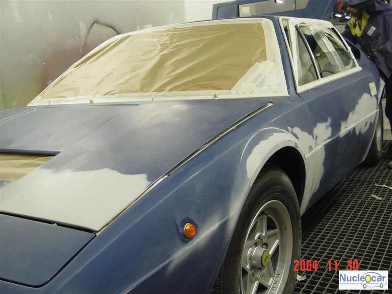
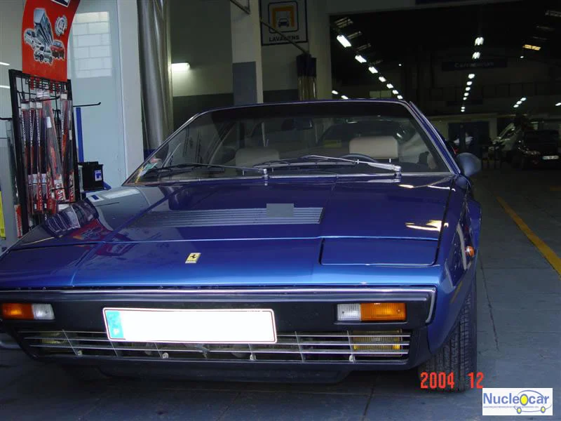

RESTAURO AUTOMÓVEL / MULTIMARCAS
Há trabalho
por trás de um clássico.
O arquivo da Nucleocar mostra veículos e intervenções de restauro. Um ponto de partida para falar sobre o estado e o objetivo do seu automóvel.
Do arquivo
da oficina.
Fotografias históricas publicadas na galeria oficial. As legendas descrevem o que é visível, sem estabelecer prazos ou resultados de um novo trabalho.


O SEU CLÁSSICO
Que automóvel
pretende recuperar?
Indique a marca, o modelo e o ano, se o souber. Descreva o estado atual e a intervenção que tem em mente.
Estes elementos ajudam a iniciar a conversa; o âmbito, as etapas e as condições do restauro dependem de avaliação pela empresa.
Preparar contacto sobre restauro